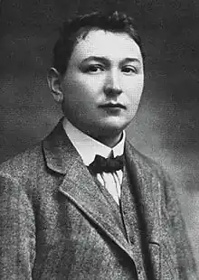
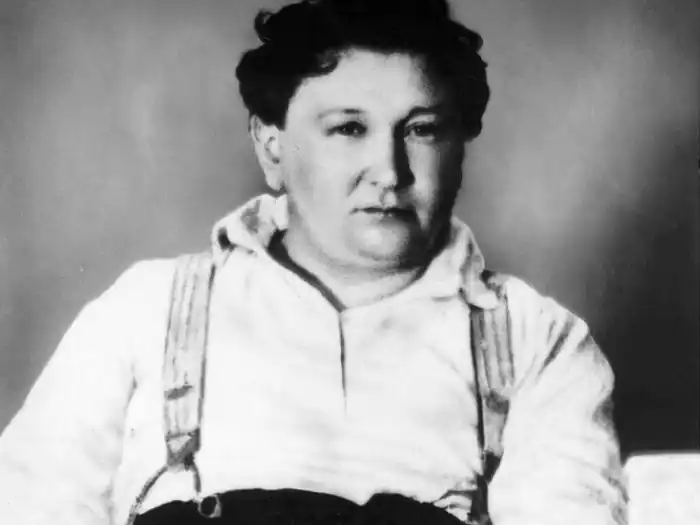

ГАШЕК, Ярослав (Hasek, Jaroslav — 30.04.1883, Прага — 03.01.1923, Ліпніце) — чеський письменник-сатирик.Життя Гашека стало матеріалом для сотень спогадів, не завжди об'єктивних і почасти просто брехливих, що було багато в чому зумовлено не лише популярністю гашеківського найзначнішого твору та його героя — Швейка, а й способом життя, схильністю до епатажу і розіграшів самого письменника.
Гашек народився у Празі в сім'ї вчителя, а згодом — банківського службовця. Дитинство Гашека минуло у злиднях. За участь у демонстрації його виключили з гімназії, певний час працював, потім навчався у торговій школі. Гашек не визнавав умовностей і авторитетів, через те йому в жодному місці не вдавалося надовго затриматися. Він вів переважно богемний спосіб життя. Друкувався з 18 років і був плідним письменником.
На формування поглядів і стилю Гашека справили вплив його подорожі Чехією, Угорщиною, Галичиною, яка входила тоді до складу Австро-Угорщини, а також його зустрічі з анархістами, з котрими він, утім, досить швидко розійшовся. Його критичне ставлення до офіційної політики проявилося не лише у його творах, а й, наприклад, у заснуванні в 1911 р. пародійної Партії помірного прогресу в рамках закону, програма якої була написана в трактирі за кухлем пива і підписана околодочним наглядачем як представником влади. Особисто Гашек виступав кандидатом від цієї партії в окрузі Віногради, але, на жаль, не набрав достатньої кількості голосів. Поворотним пунктом в біографії Гашека стала Перша світова війна. Мобілізований в армію, він перейшов лінію фронту на галицькому напрямку і здався в полон російській армії. Згодом вступив до створюваного в Росії чехословацького легіону, брав участь у друкованих виданнях легіону, потім зблизився з більшовиками, вступив у Червону Армію, де виконував функції комісара. У 1920 р. був направлений партією в Чехословаччину на допомогу революційному рухові. Але на час його повернення революційна хвиля почала спадати. Супроти Гашека отаборилася буржуазна преса. Гашек був змушений поїхати з Праги в Ліпніце, у Гавлічків Брід, де продовжував працювати над романом про Швейка. Не закінчивши роману (були написані лише три томи та частина четвертого), Гашек помер. У його смерть довго не вірили, вважаючи це черговим розіграшем Гашека. Літературна спадщина Гашека представлена величезною кількістю сатиричних та гумористичних оповідань, достовірна кількість яких досі невідома. Публікувалися вони в основному в журналах, окремими збірками вийшло небагато, наприклад, "Клопоти пана Тенкрата" (1912), "Супутник іноземців" (1913), "Моя торгівля собаками та інші гуморески" (1915). З-поміж них — "Бравий вояк Швейк та інші дивовижні історії" ("Dobry vojak Svejk a jine podivne hystory", 1912). Герой, згаданий у назві книги, з'явився наступного разу в сатиричному творі "Бравий вояк Швейк у полоні" ("Dobry vojak Svejk vzajeti", Київ, 1917). Сатира Гашека із самого початку була спрямована проти політики та державного устрою Австро-Угорської монархії. Головною темою Гашека був опір простої людини прогнилим державним установам і порядкам. Цей опір мав різні маски, але найчастіше використовувалася хитрунська. Гашек відродив традицію народного гумору, вихідним пунктом якої є перш за все герой народних книг — Уленшпігель: у Гашека також постійний контраст між здоровим глуздом героя і державним устроєм, що спотворив цей здоровий глузд. Через те сатира Гашека часто ґрунтується на перекрученні традиційних відносин, нагадуючи тим самим масничні дійства і давньогрецьку комедію. А найвідомішим і найулюбленішим твором Гашека стали "Пригоди бравого вояка Швейка під час світової війни" ("Osudy dobreho vojaka Svejka za svetove valky"), які виходили друком у 1921 — 1923 pp. Роман не був закінчений. Продовження написав фельєтоніст газети "Руде право" Карел Ванек, але він не зміг вжитися в концепцію Г., і його твір переступив через тонку грань, що відокремлювала гумор Гашека від вульгарності. Роман Гашека був ілюстрований знаменитим чеським художником Йозефом Ладою (з його ілюстраціями він майже завжди й перевидається), за ним ставилися спектаклі, зняті кінофільми. Швейк посів сьогодні гідне місце поміж героїв світової літератури; він став особливим, напівфольклорним типом героя, котрий захищає себе від державного абсурду тим, що до останньої букви виконує накази та приписи, роблячи тим самим очевидною абсурдність. Проте Гашек не одразу прийшов до цього типу героя. У ранніх оповіданнях Швейк всього лише ідіот у військовій формі, лояльний і запопадливий служака. У критиці мілітаризму Гашека основним прийомом все частіше стає гротеск, і, коли Швейк стикається не лише з військовою машиною, а й зі суспільством взагалі, це вже не простак, а хитрун в масці ідіота, тобто якщо раніше критика Гашека була спрямована супроти Швейка як антигероя, то тепер Гашек з допомогою нового Швейка-героя нападає на весь суспільний устрій. Постать Швейка спричинила неприйняття з боку "естетів" від критики та літератури, котрі не могли змиритися з тим, що народний герой не ідеалізований, а навпаки — грубий аж де вульгарності. Але ця грубість — не самоціль. Швейк грубий серед всезагальної грубості. Вік не лізе за словом у кишеню, його "народність" не згладжена, а відповідає реальності. Сатира Гашека адекватна війні. Другим докором Гашека була примітивність світогляду і потреб Швейка, але саме ця "примітивність" типова для війни як боротьби за виживання. Гашек не приймає ані романтичної, ані віталістичної точки зору на війну, які були прийняті в літературі того часу: він безжально критикує мілітаризм, розвінчує цинізм і надзвичайну тупість австрійської військової машини та її "гвинтиків". Ставлення Швейка до дійсності позбавлене навіть натяку на інтелектуальність, у чому також часто дорікали Гашеку: проте, по суті, це ставлення таке ж, що й у героїв популярного в ті роки віталізму, хіба що показане з іншого боку. Швейк — грубий, цинічний, коли він вступає у відносини із суспільством, мілітаризмом та його апологетами, але він людяний з такими ж людьми, як він сам. Критика Швейком суспільства зводиться до двох форм: він, по-перше, доводить накази до абсурду і, по-друге, постійно все коментує. Гашек у цих коментарях використовував своє знання життя і надзвичайний талант до вигадування сюжетів. Запаси історій Швейка справді невичерпні, а точна локалізація кожної з них надає гротеску відтінку абсолютної реальності. Взагалі, гротеск Гашека, по суті, реалістичний, він позбавлений будь-якої фантастики і виявляється в найзвичайнісіньких людських стосунках. Гашек не скупиться на перебільшення, але не відступає від реальності, змінюючи лише кут зору. Відчуття мови Гашека також заслуговує на увагу. В його оповіданнях багато поспішного, недоопрацьованого, недотягнутого, вони писалися в основному поспіхом, але в кожному з них комізм слів очевидний. Причому, це знову ж таки не самоціль. Так, у романі Гашека розміщує серед написаних розмовною мовою діалогів проповідь фельдкурата Ібла, складену канцелярською мовою, яка цілком відповідає змісту. Взагалі Гашек відрізняється від багатьох письменників використанням розмовної мови в усіх її тонкощах і ледве помітних відтінках, що, на жаль, робить практично неможливим адекватний переклад. Улюблений прийом Гашека — т. зв, "колаж". Він зіштовхує два погляди на речі так, начебто наклеює на один аркуш паперу вирізки з бульварної газети й із сентиментального роману. Це стосується і мови, і ситуації. Типова у цьому плані сцена початку роману, коли в одному контексті виступає Фердинанд — спадкоємець престолу та інший Фердинанд, тобто на один рівень ставиться "велике" і "мале"; типовою є й ситуація, коли до Швейка, котрий перебуває у в'язниці в очікуванні розстрілу, приходить священик, щоби востаннє його втішити. Швейк натомість приймає його за нового ув'язненого і втішає його самого. Поряд зі Швейком — інші персонажі. Деякі з них, як і Швейк, зі сторінок роману увійшли в чеську культуру та мову. Це офіцер Лукаш, змушений соромитися свого чеського походження та освіченості і, незважаючи на привабливість образу, помітно деградований; це цинік та атеїст фельдкурат Кац; інтелігент і добряк доброволець Марек, мовби інтелектуальна противага Швейку; але перш за все це божевільний австрійський викладач поручник Дуб, відданий режимові до кінця. Гашек був сучасником письменників-віталістів, і, незважаючи на неприйняття віталізму, його твори мають спільні з цим напрямом риси: він, переживши війну, писав свою сатиру в ім'я життя, любові до життя.У творчості Г. представлена й українська тематика, зокрема в романі "Пригоди бравого вояка Швейка", оповіданні "Проклятий русин", написаних у Києві. Вистави за романом Гашека йшли у театрах України, зокрема в Національному академічному драматичному театрі ім. І. Франка, У Києві на фасаді готелю "Театральний", у якому жив і працював у 1916—1918 pp. Гашек, встановлено меморіальну дошку. Українською мовою твори Гашека перекладали Остап Вишня, С. Масляк, Г. Паніко, Ю. Лісняк, О. Лєнік, О. Паламарчук та ін. T. Козак